TECHVESTVENTURES DAILY RISK ALERTS — Emergent News Digest — Nov 26, 2026, 12:00 PM EST ALL RISK REPORTS click TVV Risk Center
TVV RESEARCH DIGEST — November 26, 2026 — 13 desks
Prioritized Risk Summary November 26, 2026
| Sections Ranked for Importance Today | |
|---|---|
| PREDICTIONS | Bettors price a 93.5% December Fed hike and 24% odds of a Dec 12 shutdown |
| AI BOOST | Forrester sees an AI-made bug causing a global outage in 2027 |
| TECHNOLOGY | S&P puts Nvidia's AA rating on downgrade watch; server shipments to SE Asia halted |
| DERIVATIVES | AI bubble-burst odds double to 14%; Oracle bonds near 9%, VIX curve inverted |
| ECONOMY | Canada, Japan and US all lean toward December hikes; online sales up 9.1% |
| STOCKS | Nasdaq recovers from a 4.5% morning drop to close down 0.6%; Nvidia off 3.9% |
| GEOPOLITICS | Iranian drones kill two Italian technicians in Kuwait; Iran claims Gulf mine strikes |
| TERROR | Germany arrests two Iraqis over an Iran-linked synagogue bomb plot; FIFA hacked |
| HEALTH | Congo Ebola passes 12,000 cases as fighting forces responders to evacuate |
| COMMODITY | Natural gas up 11% and gold up 1.9% in thin holiday trade; coffee up 122% since 2019 |
| INFRASTRUCT | Thanksgiving storm knocks out power in the Mid-Atlantic and St. Louis |
| SPACE | G1 storm window on Thanksgiving night; no M-class flare in NOAA data |
| QUAKES | No new damaging M6+ quake; Panama still rebuilding from its Oct 9 M7.5 |
1. Major Geopolitical Conflict Developments
- ★ Iranian drones kill two Italians in Kuwait: two Rheinmetall Italia technicians, aged 65 and 36, died Thursday after Iranian drones targeted a Kuwaiti air-defence detection station where they were maintaining Skyguard radar antennas; a Kuwaiti and a Pakistani worker were injured by falling debris. Kuwait's army called it "heinous Iranian aggression" against a "vital site" (Italian Foreign Ministry, ANSA, BBC, Arab News). Italian Foreign Ministry · ANSA · BBC · Arab News
- ★ Mines in the Gulf, a squeeze at home: Iran claims mine strikes on ships, which lifted Brent about 1.7% to $96.25 by 14:25 GMT (CNBC, Euronext); the claims are not independently confirmed and are labeled as Iranian claims. Arab News and Al Arabiya describe an Iranian offensive to break the US blockade, while the WSJ reports a "silent war" gripping Iran's economy and Iran International cites economists who say Tehran's efforts to offset the blockade are falling short. The Jerusalem Post reports assessments that Iran is developing new ballistic-missile variants. CNBC · Euronext · Al Arabiya · WSJ · Iran International · The Jerusalem Post
- ★ Trump and NATO warn Moscow: President Trump and NATO's chief urged Russia to avoid actions that widen the Ukraine war as attacks on Ukraine's energy grid intensify (Reuters, CNBC). Dozens of countries told Russia to stop using tear gas on the battlefield (The Guardian), and a Ukrainian drone strike killed five in Russian-occupied Zaporizhzhia (Al Jazeera). Ukraine says its Blysk combat laser shot down a Russian jet-powered Geran drone for the first time; the system is still in testing (Kyiv Independent, CBS News). Reuters · CNBC · The Guardian · Al Jazeera · Kyiv Independent · CBS News
- ★ Estonia weighs closing the last rail link: with all road crossings to Russia closing Dec 1 for at least six months after GRU-ordered sabotage attempts on its defence firms, Estonia is now weighing closing its last rail crossing after 12 attacks linked to Moscow (Kyiv Post, Estonian government). Kyiv Post · Estonian Foreign Ministry
- ★ Xi purges a rising star: Shanghai party chief and Politburo member Chen Jining, seen as a contender for China's top leadership body, is under investigation for suspected serious violations of discipline and law; no charges were disclosed (Bloomberg, AP, Nikkei Asia). Nikkei says his fall clouds the 2027 leadership reset. Separately, Lithuania threatened to revoke the status of Taiwan's office to repair ties with China (Bloomberg). Bettors see no near-term Asian war: Polymarket gives 8.5% odds that China invades Taiwan by end-2027, down from 10.5% a month ago, and puts every 2026 China clash market below 7% (see graph). Bloomberg · AP News · Nikkei Asia · Bloomberg · Polymarket
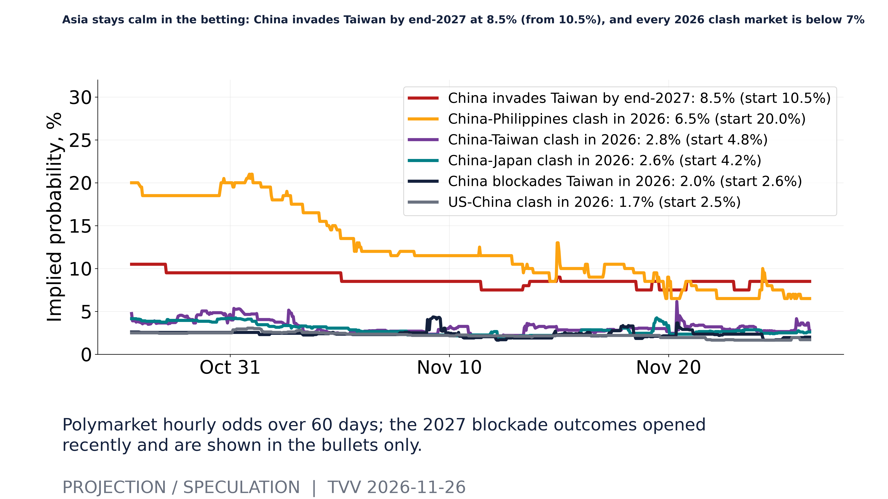
Asia stays calm in the betting: China invades Taiwan by end-2027 at 8.5% (from 10.5%), and every 2026 clash market is below 7%. Polymarket hourly odds over 60 days; the 2027 blockade outcomes opened recently and are shown in the bullets only. [Projection/Speculation; data as of 2026-11-26 10:45 ET] Source: polymarket.com data page
2. Major Terror / Security Incidents
- ★ Iran-linked synagogue bomb plot: German federal prosecutors had two Iraqi nationals, Mostafa Al-R. and Ameer J., arrested in Heidelberg and Cologne Thursday, with 17 premises searched by more than 250 officers. They allegedly helped found a cell in late 2025 linked to HAYI (Harakat Ashab al-Yamin al-Islamiyyah), blamed for attacks on US, Israeli and Jewish sites in Europe since March; operatives presumably carrying explosives went to synagogues in Cologne and another European city on two nights in late March, but did not attack (German Federal Prosecutor, The National, DW). US prosecutors call HAYI a front for Kataib Hezbollah (The National). An IISS paper finds Iran has sustained operations in Europe despite frequent arrests. German Federal Prosecutor · The National · DW · IISS
- ★ Northern Israel ISIS plot: an Israeli man was charged with an ISIS-inspired plot to kill soldiers (Ynetnews). Ynetnews
- ★ FIFA hacked by impersonation: FIFA confirmed hackers accessed a "limited set of personal and business information"; a new group, the Handsome Boy Hacking Club, claims it took more than 12 GB from FIFA's Microsoft environment and published it after a failed extortion attempt. Insiders say the attackers posed as staff rather than exploiting a technical flaw; one analysis counted 169 files labeled as passports and 116 as visas (AP, The Record, Secure.com). Reuters reports retailers face a rising AI-driven cyberattack threat ahead of Black Friday, many without insurance. AP News · The Record · Secure.com · Reuters
- ★ The bug flood: NIST's vulnerability database logged 14,859 new CVEs in Nov 1-25, 4.8 times November 2025, and 107,178 so far in 2026 versus 49,972 in all of 2025 (see graph). At the current pace November reaches about 17,800 (a projection), as AI tools speed bug discovery faster than defenders can patch. NIST NVD
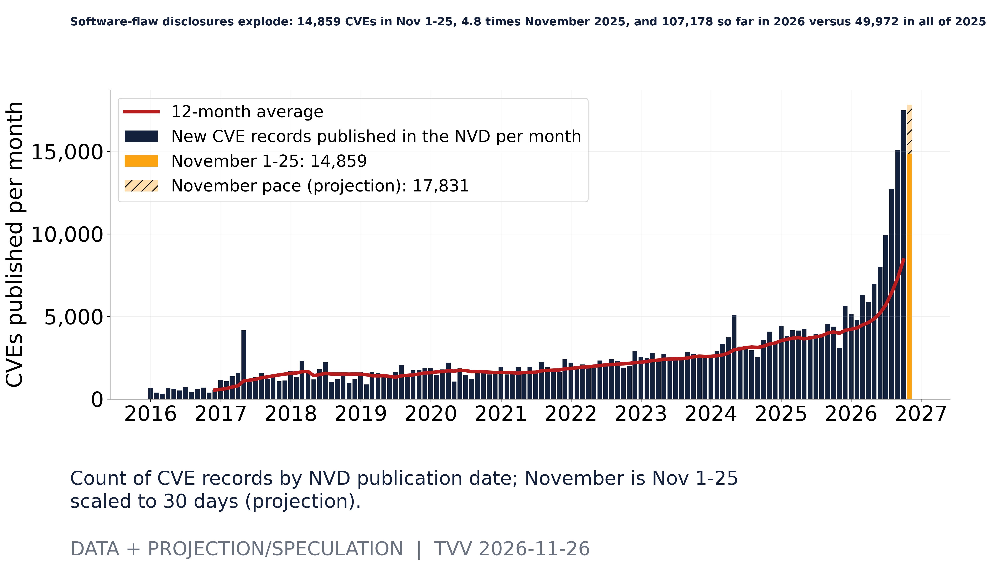
Software-flaw disclosures explode: 14,859 CVEs in Nov 1-25, 4.8 times November 2025, and 107,178 so far in 2026 versus 49,972 in all of 2025. Count of CVE records by NVD publication date; November is Nov 1-25 scaled to 30 days (projection). [Data + Projection/Speculation; data as of 2026-11-26] Source: nvd.nist.gov data page
3. Earthquakes and Eruptions
- ★ No new M6.0+ quake with significant casualties or damage since the last issue. Panama is still recovering from the Oct 9 M7.5 Azuero quake: the joint situation reports count 4,503 homes totally destroyed by mid-November, IOM reports over 2,700 people still in shelters, and Panama's finance ministry puts reconstruction at up to $500 million (ReliefWeb, IOM, La Estrella). Globally it has been a quiet year for the biggest faults: 2026 seismic energy from M6+ quakes is 0.6 times the 2000-2025 median, sixth-lowest in 27 years (see graph). ReliefWeb · IOM · La Estrella de Panamá · USGS
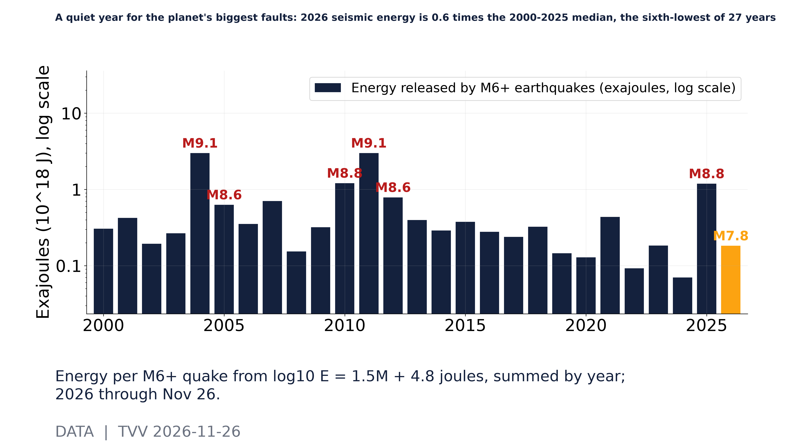
A quiet year for the planet's biggest faults: 2026 seismic energy is 0.6 times the 2000-2025 median, the sixth-lowest of 27 years. Energy per M6+ quake from log10 E = 1.5M + 4.8 joules, summed by year; 2026 through Nov 26. [Data; data as of 2026-11-26] Source: earthquake.usgs.gov data page
4. Solar / Space Weather
- ★ Thanksgiving G1 window: NOAA expects G1 minor storms late Nov 26 into early Nov 27 UTC from a recurrent coronal-hole high-speed stream, with a forecast peak Kp of 5 (see graph); near term, aurora is possible at northern US latitudes but nothing stronger is forecast. A headline reporting an M7.9 flare is not supported by NOAA's GOES data, which show nothing above C9.6 in the past week and only B-class flares since Nov 21 (see graph). NOAA SWPC · NOAA GOES X-ray · SpaceWeatherLive
- ★ Radiation belts after superstorms: research reported by Phys.org found four radiation belts surrounded Earth for weeks after the 2024 solar superstorm, a reminder that a weakening magnetic field leaves satellites more exposed. No one can predict the timing of a sudden geomagnetic shift; Michael Hentschel's own view is 2035 at the earliest, with critical earth changes along the way. Phys.org
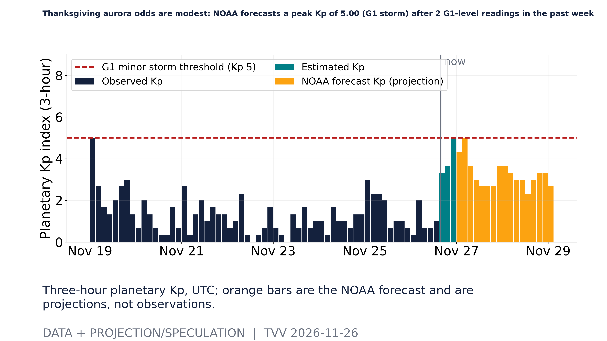
Thanksgiving aurora odds are modest: NOAA forecasts a peak Kp of 5.00 (G1 storm) after 2 G1-level readings in the past week. Three-hour planetary Kp, UTC; orange bars are the NOAA forecast and are projections, not observations. [Data + Projection/Speculation; data as of 2026-11-29 00:00 UTC] Source: services.swpc.noaa.gov data page
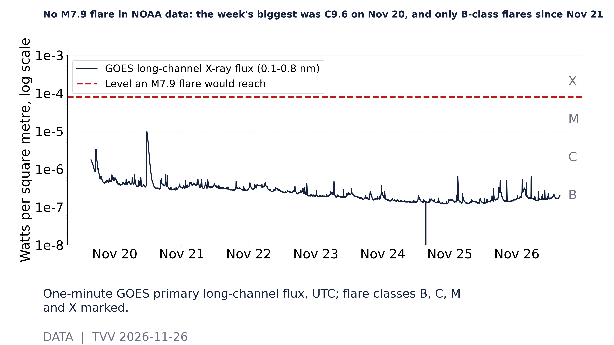
No M7.9 flare in NOAA data: the week's biggest was C9.6 on Nov 20, and only B-class flares since Nov 21. One-minute GOES primary long-channel flux, UTC; flare classes B, C, M and X marked. [Data; data as of 2026-11-26 15:24 UTC] Source: services.swpc.noaa.gov data page
5. Critical Infrastructure / Transportation Disruptions
- ★ Thanksgiving storm outages: thousands woke without power in Maryland and Virginia (WUSA9), outages climbed across Delmarva (WBOC) and St. Louis saw thousands without power after snow blanketed the region (KSDK), as a storm barrels up the East Coast with flights delayed and cancelled (Business Insider). A man died after burns from a fire at a Bitcoin-mining data center in Georgia (Data Center Dynamics). WUSA9 · WBOC · KSDK · Business Insider · Data Center Dynamics
- ★ Data-center boom and backlash: data-center construction reached a $96.5 billion annual rate in September, up 90% in a year and 7 times the November 2022 rate; a straight-line trend points higher into 2027 (projection, see graph). New Mexico's attorney general is probing approval of Lea County's $130 billion Google data-center deal (Bond Buyer, New Mexico Political Report). Polymarket bettors see roughly 32% odds that each of seven states, including Texas and Ohio, enacts a data-center moratorium by end-2028, but about 2% this year (see graph); near term, no state halt is expected. Census Bureau · Bond Buyer · New Mexico Political Report · Polymarket
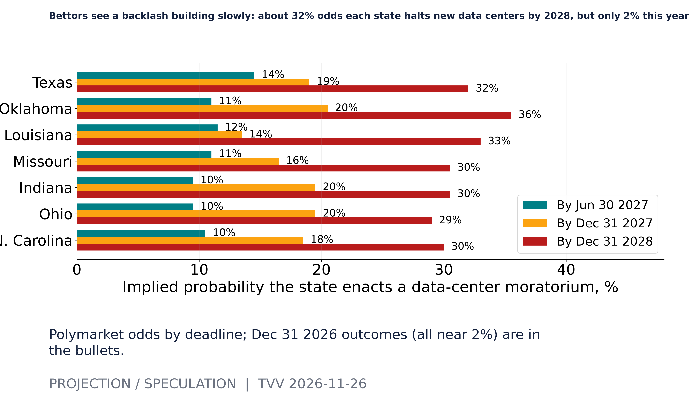
Bettors see a backlash building slowly: about 32% odds each state halts new data centers by 2028, but only 2% this year. Polymarket odds by deadline; Dec 31 2026 outcomes (all near 2%) are in the bullets. [Projection/Speculation; data as of 2026-11-26 10:45 ET] Source: polymarket.com data page
6. Econo-Metrics
- ★ Rate hikes spread worldwide: all six of Canada's big banks now expect a Bank of Canada hike on Dec 9, likely 25 bp to 2.75% (Bloomberg, Global News); Bank of Japan board member Naoki Tamura urged faster hikes, saying inflation risks could justify a 50 bp move (Reuters, NHK); and India's swaps signal a possibly outsized RBI hike next week (Reuters). The FT says a hawkish Fed is poised to raise rates despite market turmoil. Japan's life insurers have cut currency hedging to record lows, complicating the yen's defense near 160 per dollar (Bloomberg, The Japan Times). Bloomberg · Global News · Reuters · Reuters · Financial Times · Bloomberg
- ★ Shoppers spend, prices bite: Adobe counts $82.5 billion of US online spending in Nov 1-22, up 9.1% from last year (Digital Commerce 360), and online now takes 17.9% of US retail sales, above the 16.0% pandemic peak, with the trend pointing to about 19% by late 2027 (projection, see graph). Retailers added 135,000 jobs in October, close to the 2000-2025 October average (see graph); November data arrive Dec 4. The Farm Bureau's Thanksgiving dinner for 10 costs $58.63, up more than 6%, the first rise in four years, led by a 10% jump in turkey (AFBF). Digital Commerce 360 · Census Bureau · BLS · American Farm Bureau Federation
- ★ Layoffs down, AI cuts up: the WSJ reports job cuts are down 41% so far this year, while one tracker counts 121,401 US cuts attributed to AI through October (AI Funding Tracker). Workday bought AI startup C1.ai for $850 million amid a layoff-filled pivot (Dealroom), and Ubisoft cut 4% of its Canadian staff while adding a subsidiary focused on AI for gameplay (MMORPG.com). WSJ · AI Funding Tracker · Dealroom · MMORPG.com
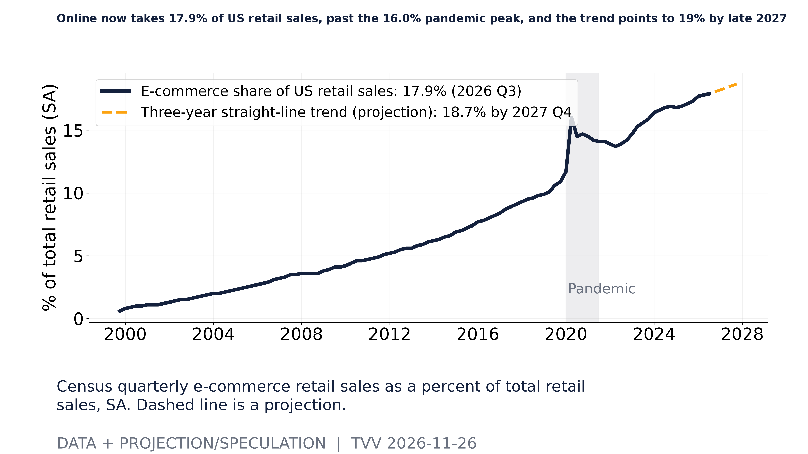
Online now takes 17.9% of US retail sales, past the 16.0% pandemic peak, and the trend points to 19% by late 2027. Census quarterly e-commerce retail sales as a percent of total retail sales, SA. Dashed line is a projection. [Data + Projection/Speculation; data as of 2026-07-01] Source: fred.stlouisfed.org data page
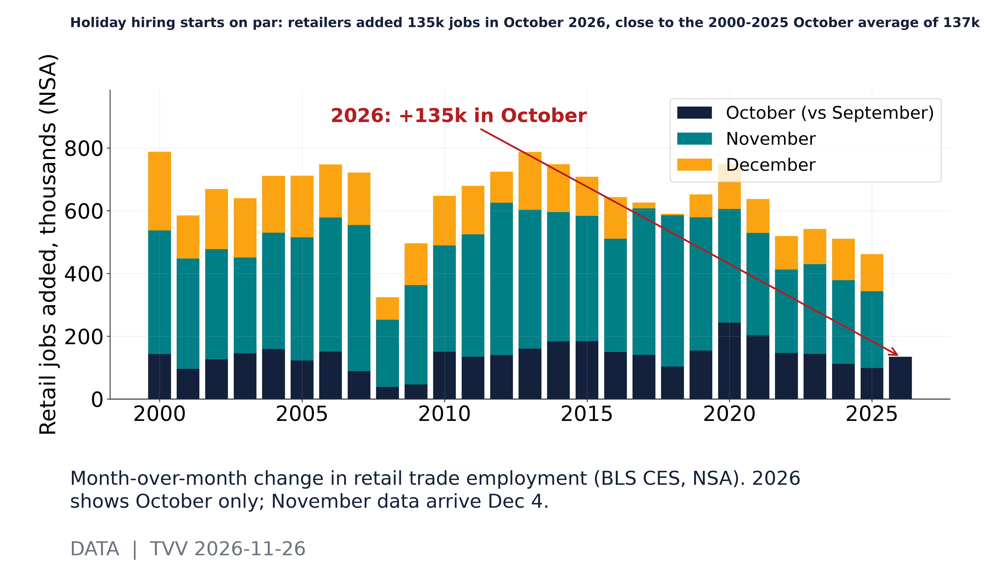
Holiday hiring starts on par: retailers added 135k jobs in October 2026, close to the 2000-2025 October average of 137k. Month-over-month change in retail trade employment (BLS CES, NSA). 2026 shows October only; November data arrive Dec 4. [Data; data as of 2026-10-01] Source: fred.stlouisfed.org data page
7. Epidemic / Bio-Metrics
- ★ Ebola passes 12,000 cases amid fighting: Congo's Bundibugyo Ebola outbreak reached 12,021 confirmed cases and 5,904 deaths as of Nov 26; clashes in Ituri forced about a dozen health workers, including two WHO staff, to evacuate Akwe after three days in crossfire, and WHO moved its Mongbwalu team to Bunia (AP, Reuters, Al Jazeera). Gavi has secured access to a candidate Bundibugyo vaccine should trials succeed (Health Policy Watch), and a Kenyan court ruled a US-backed Ebola quarantine center unconstitutional (ABC News). AP News · Reuters · Al Jazeera · Health Policy Watch · ABC News
- ★ Bird flu activity rises: CIDRAP reports a continuing uptick in H5N1 avian flu across North America, with new local detections reported in the Pacific Northwest, including Oregon's Clatsop County. WHO's Nov 25 outbreak notice details three Washington dairy-worker H5N1 cases between Oct 16 and Nov 4, one fatal, with no evidence of human-to-human spread (WHO). CIDRAP · WHO · Your Oregon News
- ★ Measles has not peaked: CDC counts 6,039 US cases in 2026 as of Nov 24, the most since 1991, with recent weeks still averaging 239 cases (see graph); near term, the year-end projection keeps rising. Researchers report integrated wastewater and clinical genomic surveillance for tracking measles at high resolution (News-Medical). CDC · News-Medical
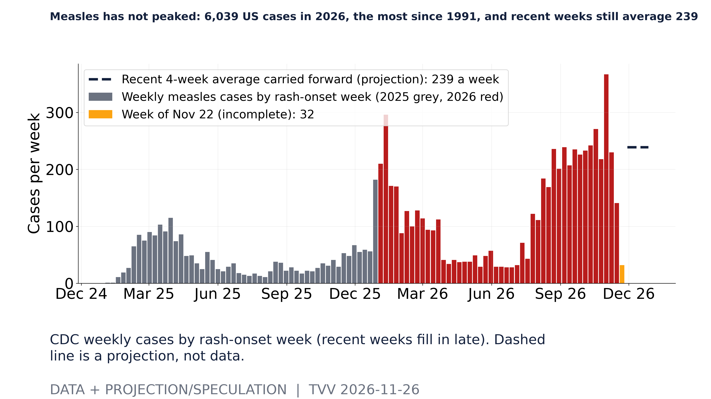
Measles has not peaked: 6,039 US cases in 2026, the most since 1991, and recent weeks still average 239. CDC weekly cases by rash-onset week (recent weeks fill in late). Dashed line is a projection, not data. [Data + Projection/Speculation; data as of 2026-11-24] Source: cdc.gov data page
8. Gold and Silver and Commodities
- ★ Holiday futures jump in thin trade: with US exchanges on a Thanksgiving schedule, gold futures traded about $3,603 at 10:14 AM ET, up 1.9% from Wednesday's $3,536 settle, silver $41.90 (+4.6%), WTI $84.70 and natural gas $3.63, up 11% (Yahoo Finance quotes). Reuters had gold drifting lower Wednesday on Fed-hike fears, and Kitco notes gold near $3,500 after jobless claims fell to 189,000. Citi sees oil trending to $60-65 a barrel by the first quarter of 2027 (EnergyNow), and Treasury Secretary Bessent sees oil as low as $40 after the Iran war (EnergyNow). Futures curves agree on cheaper energy ahead: natural gas falls from $3.27 for January to $2.41 for April 2027, and WTI from $84 to $71 (see graph). Yahoo Finance · Reuters · Kitco · EnergyNow · EnergyNow · CME Group
- ★ The Thanksgiving pantry outran inflation: BLS average prices show ground coffee at $9.25 a pound, up 122% since October 2019, eggs up 81% and ground beef up 76%, against 31% for all consumer prices (see graph). Wholesale turkey hit a record $2 a pound even as Walmart and Lidl cut basket prices (BigGo Finance, Reuters). BLS · BigGo Finance · Reuters
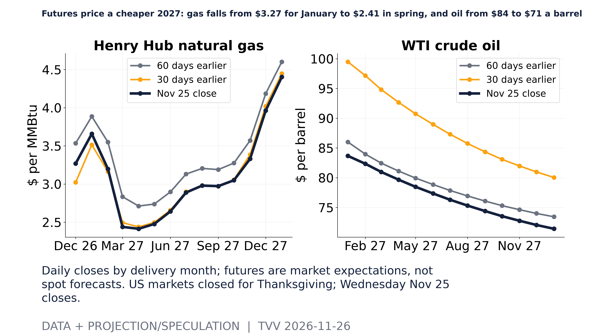
Futures price a cheaper 2027: gas falls from $3.27 for January to $2.41 in spring, and oil from $84 to $71 a barrel. Daily closes by delivery month; futures are market expectations, not spot forecasts. US markets closed for Thanksgiving; Wednesday Nov 25 closes. [Data + Projection/Speculation; data as of 2026-11-25] Source: cmegroup.com data page
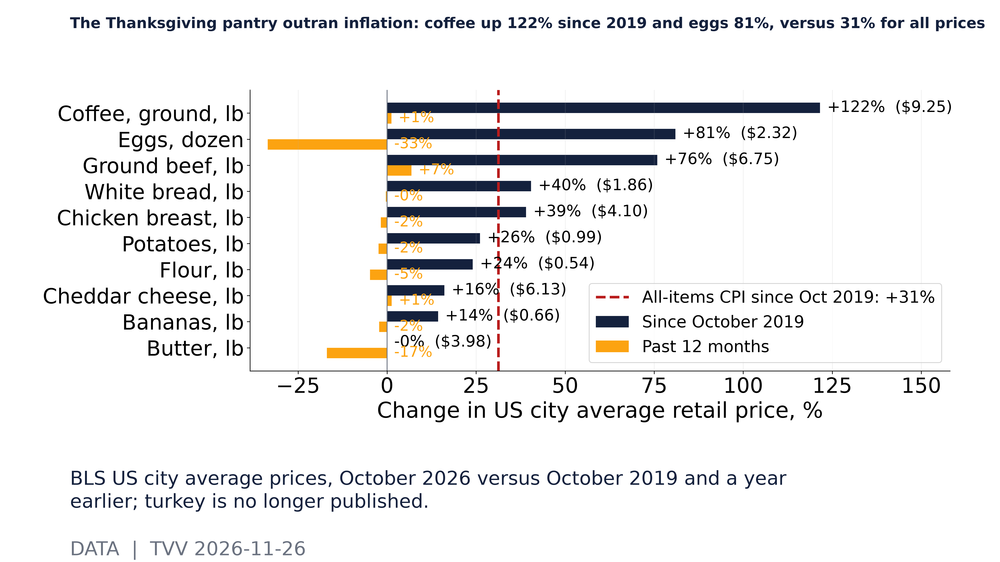
The Thanksgiving pantry outran inflation: coffee up 122% since 2019 and eggs 81%, versus 31% for all prices. BLS US city average prices, October 2026 versus October 2019 and a year earlier; turkey is no longer published. [Data; data as of 2026-10-01] Source: fred.stlouisfed.org data page
9. Stock Averages and Nasdaq Major Movers
- ★ Wednesday's comeback: the Nasdaq was down 4.5% at 9:40 AM ET but closed down only 0.62% at 23,585.80, and the S&P 500 closed down 0.25% at 7,182.78 after a 3.1% morning drop (see graph); the Dow erased a 1,100-point loss (Yahoo Finance). Nvidia still fell about 3.9% to $149.30 and Oracle 5.1% to $103.88; the 10-year yield closed at 4.85%, the lowest since September (CME Group). US markets are closed Thursday and close early Friday. Stock futures rose in holiday trading (Barron's, Bloomberg), while MarketWatch argues the sell-off will probably get worse first and Bloomberg sees echoes of 1962. Yahoo Finance · Nasdaq via Yahoo Finance · CME Group · Barron's · Bloomberg · MarketWatch · Bloomberg
- ★ History favors a holiday lift: since 1950 the S&P 500 rose from Thanksgiving eve to Dec 31 in 70% of years, with a median gain of 1.6% (see graph). Applied to Wednesday's close, the historical range implies a 10th-90th percentile range of about 7,026 to 7,543 by Dec 31, median 7,298 (projection, not a forecast). Yahoo Finance notes a small-cap Santa rally is under way, but a December Fed hike has spoiled one before. S&P 500 via Yahoo Finance · Yahoo Finance
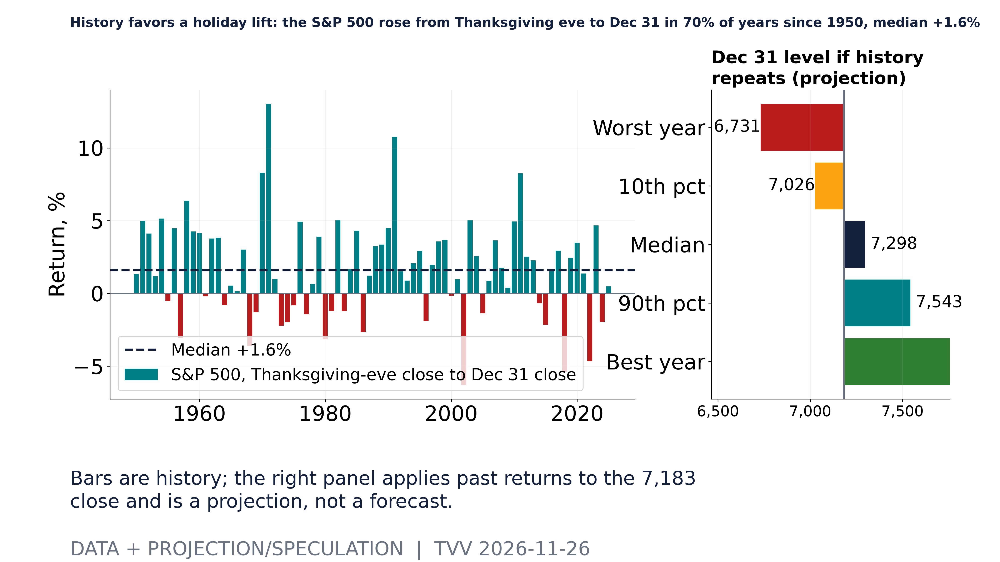
History favors a holiday lift: the S&P 500 rose from Thanksgiving eve to Dec 31 in 70% of years since 1950, median +1.6%. Bars are history; the right panel applies past returns to the 7,183 close and is a projection, not a forecast. [Data + Projection/Speculation; data as of 2026-11-25] Source: finance.yahoo.com data page
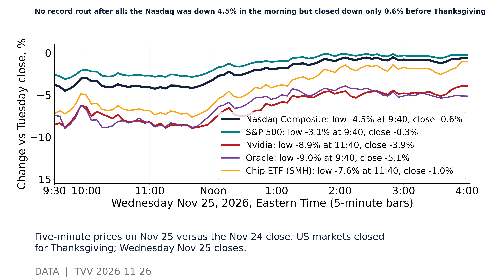
No record rout after all: the Nasdaq was down 4.5% in the morning but closed down only 0.6% before Thanksgiving. Five-minute prices on Nov 25 versus the Nov 24 close. US markets closed for Thanksgiving; Wednesday Nov 25 closes. [Data; data as of 2026-11-25 16:00 ET] Source: finance.yahoo.com data page
10. Polymarket and Kalshi Sentiment Highlights
- ★ A December hike is priced in: Polymarket gives 93.5% odds of a 25 bp Fed hike on Dec 9, up from 75.5% 60 days ago, and 53.5% to a second hike in January; Kalshi prices any December hike at 96% (see graph). Near term, bettors expect two hikes by late January. Polymarket · Kalshi
- ★ Shutdown odds: Kalshi traders price about a 24% chance of a US government shutdown on Dec 12, after funding expires Dec 11 (Crypto Briefing, Kalshi). Crypto Briefing · Kalshi
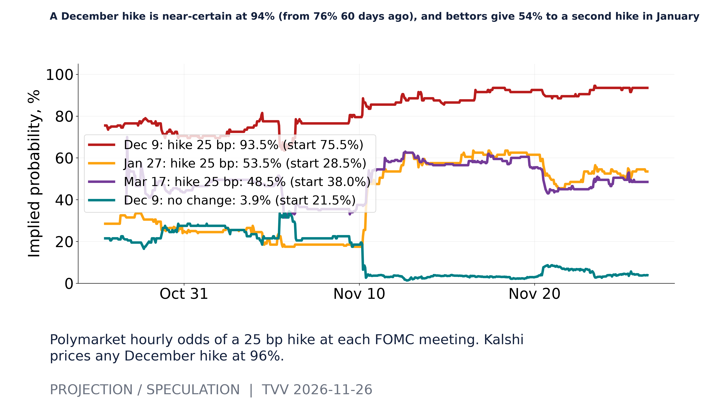
A December hike is near-certain at 94% (from 76% 60 days ago), and bettors give 54% to a second hike in January. Polymarket hourly odds of a 25 bp hike at each FOMC meeting. Kalshi prices any December hike at 96%. [Projection/Speculation; data as of 2026-11-26 10:45 ET] Source: polymarket.com data page
11. Tech-Metrics
- ★ Nvidia on downgrade watch: S&P Global put Nvidia's AA rating on CreditWatch negative, saying a downgrade of one notch is possible within 90 days if governance deficiencies remain, citing board independence, key-man risk and questions over export controls; it would weigh further if export rules were circumvented or China exposure understated (S&P Global, CNBC). Moody's cut its outlook to stable on Nov 18. S&P Global Ratings · CNBC
- ★ Server shipments to Southeast Asia halted: Nvidia told partners such as Dell and Supermicro to stop shipping servers to Malaysia, Singapore, Thailand and Indonesia under the new US export rules; it booked $104 billion of revenue through its Singapore unit in 2025, and cloud providers say the 90-day licensing clock with no guidance is causing "sheer chaos" (FT via CNA, Reuters). Bloomberg reports billions in Asian data-center loans and deals have stalled, including Bridge Data Centres' $6.6 billion financing. CNA / Financial Times · Reuters · Bloomberg
- ★ Huang apologizes, Washington digs in: Jensen Huang told staff at an all-hands meeting that he is in daily therapy and apologized for violating Nvidia's code of conduct (WSJ, Bloomberg Law). The Washington Post reports Hegseth and Pentagon officials floated using the Defense Production Act to pressure the board to reinstate him; the Pentagon says that "never happened." Officials briefed congressional staff that there is no evidence China orchestrated Huang's affair (WSJ, NYT), and his Senate testimony falls on the same day Nvidia unveils products at GTC (CNBC). Bettors give 81.5% odds that Huang testifies by Dec 3, up from 50.5% three days ago, and 16% that he is out again by March (see graph). WSJ · Bloomberg Law · The Washington Post · WSJ · The New York Times · CNBC · Polymarket
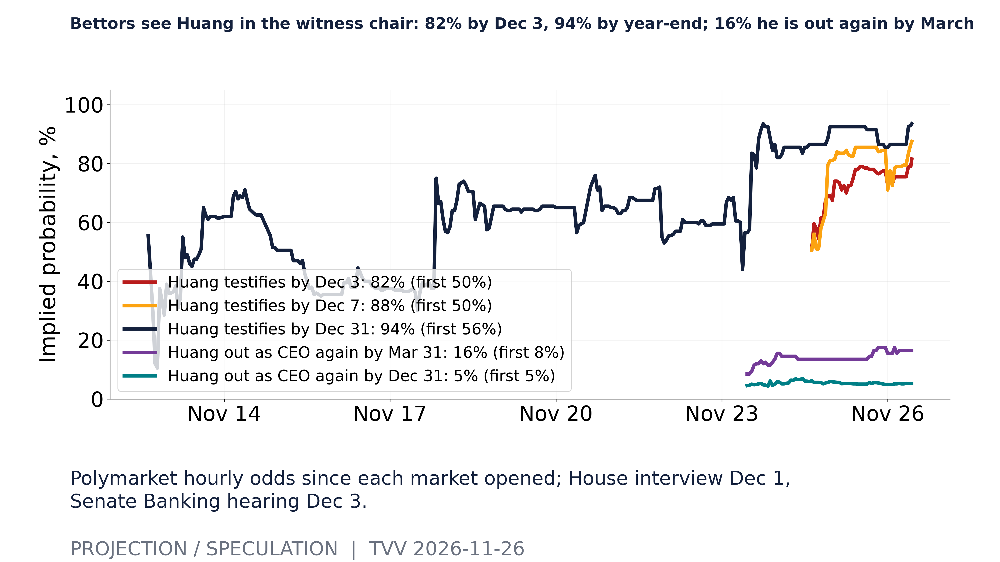
Bettors see Huang in the witness chair: 82% by Dec 3, 94% by year-end; 16% he is out again by March. Polymarket hourly odds since each market opened; House interview Dec 1, Senate Banking hearing Dec 3. [Projection/Speculation; data as of 2026-11-26 10:45 ET] Source: polymarket.com data page
12. AI Hypergrowth Risks
- ★ AI-made outages ahead: Forrester predicts that in 2027 an AI-generated bug will cause a global outage across industries, as AI-assisted patching outpaces code review and testing (Computer Weekly, Forrester). Microsoft president Brad Smith warns outages will be the new normal for a while as AI finds flaws faster than developers can safely patch, especially in legacy systems (TechSpot). The IAPP asks what recent outages mean for AI governance when nobody checks the work. Computer Weekly · Forrester · TechSpot · IAPP
- ★ AI penetration and its limits: Newsweek argues the Iran war was "betrayed by AI"; Indian IT employees and an industry body are seeking a national policy against AI-driven layoffs (Business Standard). Cloud capacity is flooding in: producer prices for data processing and hosting rose just 2.0% in a year to October, versus 6.5% for all producer prices (BLS, see graph). Polymarket gives Google 77.5% odds of the top AI model at year-end, Anthropic 17.5% (from 56% a month ago) and OpenAI 2.5% (see graph); near term, bettors see Google's lead holding. Newsweek · Business Standard · BLS · Polymarket
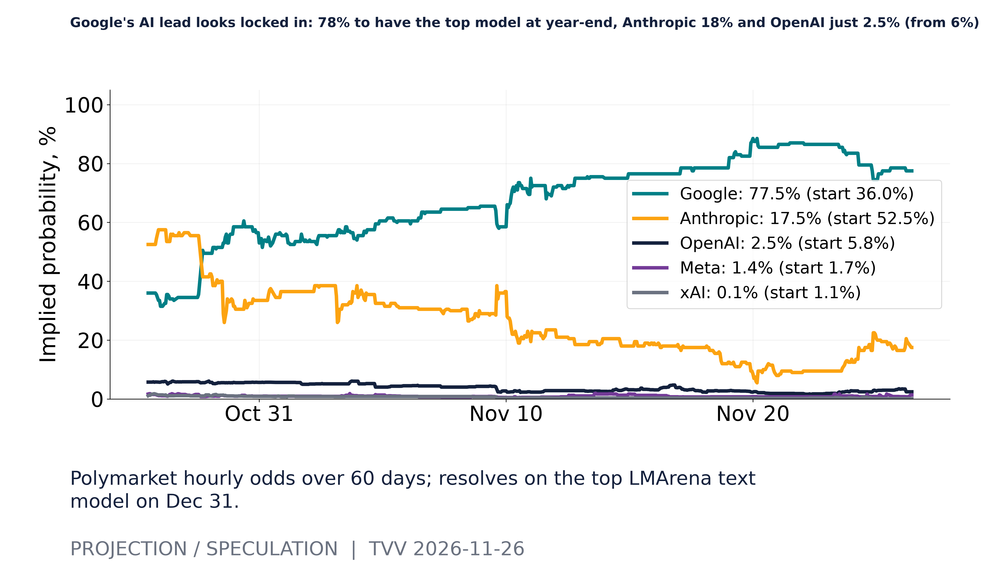
Google's AI lead looks locked in: 78% to have the top model at year-end, Anthropic 18% and OpenAI just 2.5% (from 6%). Polymarket hourly odds over 60 days; resolves on the top LMArena text model on Dec 31. [Projection/Speculation; data as of 2026-11-26 10:45 ET] Source: polymarket.com data page
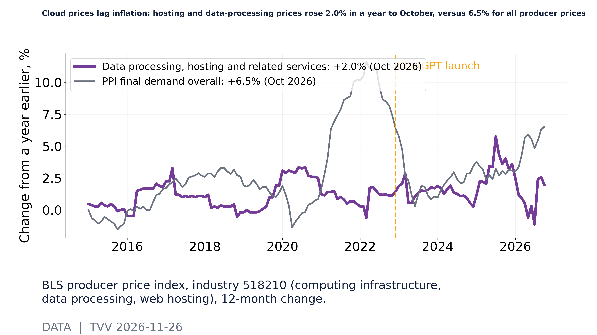
Cloud prices lag inflation: hosting and data-processing prices rose 2.0% in a year to October, versus 6.5% for all producer prices. BLS producer price index, industry 518210 (computing infrastructure, data processing, web hosting), 12-month change. [Data; data as of 2026-10-01] Source: fred.stlouisfed.org data page
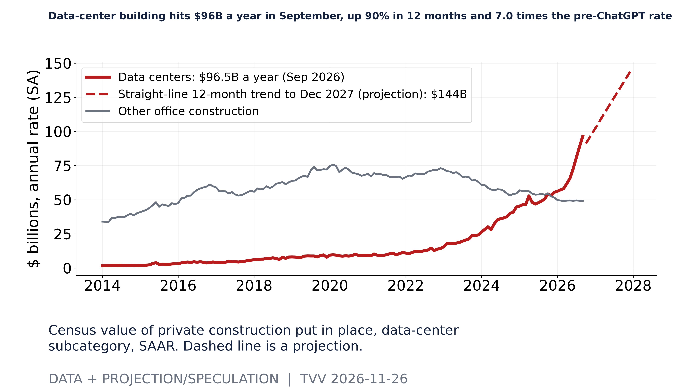
Data-center building hits $96B a year in September, up 90% in 12 months and 7.0 times the pre-ChatGPT rate. Census value of private construction put in place, data-center subcategory, SAAR. Dashed line is a projection. [Data + Projection/Speculation; data as of 2026-09-01] Source: census.gov data page
13. Finance Bubble Derivatives Risk
- ★ AI credit stress spreads: Oracle bonds yield about 9% (Barron's) and Oracle and CoreWeave CDS sit at record levels (TradingView), with SoftBank's insurance costs the highest since 2022 as OpenAI doubts grow (Startup Fortune). CoreWeave's new debt sale won investment-grade ratings (Yahoo Finance) even as banks start selling AI data-center loans on construction delays (Crypto Briefing). JPMorgan expects $450 billion of AI bond sales in 2027 before growth slows (Startup Fortune). Polymarket odds that the AI bubble bursts by Dec 31 rose to 14.1% from 7.8% a week ago, and to 34% by mid-2027 (see graph). Barron's · TradingView · Startup Fortune · Yahoo Finance · Crypto Briefing · Startup Fortune · Polymarket
- ★ Options stress and leverage: the VIX curve stayed inverted for a seventh session, with 9-day volatility at 29.6 above the 3-month 26.3 at Wednesday's close (Cboe, see graph); near term, traders pay most for protection over the next two weeks. SK Securities says a bear-market call hinges on mid-December margin data, noting margin debt fell only 3.6% while the S&P 500 dropped 10% (BigGo Finance). South Korean retail leveraged-ETF purchases plunged 30% in a month (BigGo Finance), the 2x Micron ETF fell 62% in a month (24/7 Wall St.), and US ETF assets topped $15 trillion in a sell-off week (InvestmentNews). Cboe · BigGo Finance · BigGo Finance · 24/7 Wall St. · InvestmentNews
- ★ Crypto outflows set a record: US spot Bitcoin ETFs lost about $5.39 billion in November through Nov 25, the biggest monthly outflow since their 2024 launch, mostly from BlackRock's IBIT (CoinDesk, The Block), even as Bitcoin rebounded above $60,000 in thin holiday trading (Bloomberg). A bill to lock up US government Bitcoin for 20 years advanced to the full House (CoinDesk). CoinDesk · The Block · Bloomberg · CoinDesk
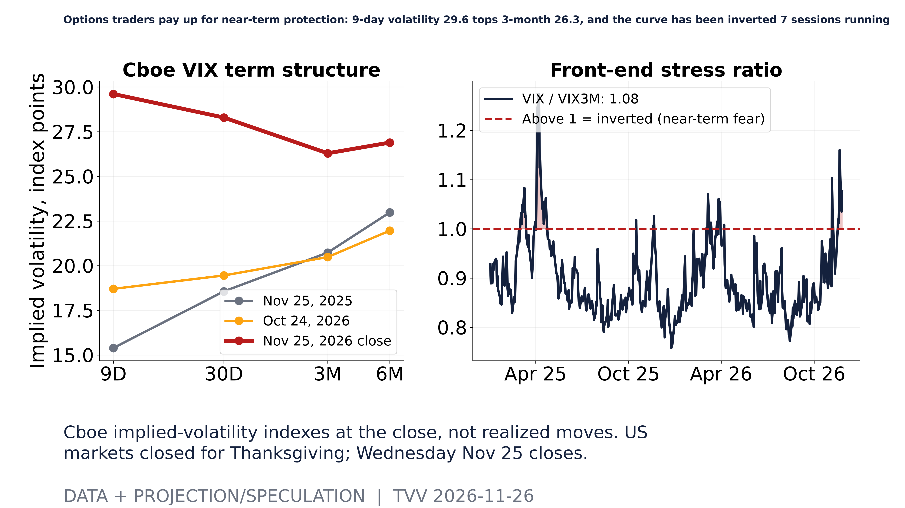
Options traders pay up for near-term protection: 9-day volatility 29.6 tops 3-month 26.3, and the curve has been inverted 7 sessions running. Cboe implied-volatility indexes at the close, not realized moves. US markets closed for Thanksgiving; Wednesday Nov 25 closes. [Data + Projection/Speculation; data as of 2026-11-25] Source: cboe.com data page
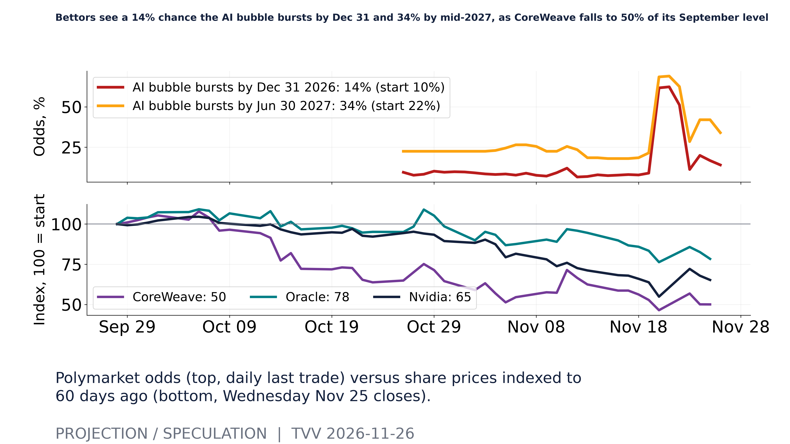
Bettors see a 14% chance the AI bubble bursts by Dec 31 and 34% by mid-2027, as CoreWeave falls to 50% of its September level. Polymarket odds (top, daily last trade) versus share prices indexed to 60 days ago (bottom, Wednesday Nov 25 closes). [Projection/Speculation; data as of 2026-11-26 10:45 ET] Source: polymarket.com data page
Prioritized Risk Summary November 26, 2026
| Sections Ranked for Importance Today | |
|---|---|
| PREDICTIONS | Bettors price a 93.5% December Fed hike and 24% odds of a Dec 12 shutdown |
| AI BOOST | Forrester sees an AI-made bug causing a global outage in 2027 |
| TECHNOLOGY | S&P puts Nvidia's AA rating on downgrade watch; server shipments to SE Asia halted |
| DERIVATIVES | AI bubble-burst odds double to 14%; Oracle bonds near 9%, VIX curve inverted |
| ECONOMY | Canada, Japan and US all lean toward December hikes; online sales up 9.1% |
| STOCKS | Nasdaq recovers from a 4.5% morning drop to close down 0.6%; Nvidia off 3.9% |
| GEOPOLITICS | Iranian drones kill two Italian technicians in Kuwait; Iran claims Gulf mine strikes |
| TERROR | Germany arrests two Iraqis over an Iran-linked synagogue bomb plot; FIFA hacked |
| HEALTH | Congo Ebola passes 12,000 cases as fighting forces responders to evacuate |
| COMMODITY | Natural gas up 11% and gold up 1.9% in thin holiday trade; coffee up 122% since 2019 |
| INFRASTRUCT | Thanksgiving storm knocks out power in the Mid-Atlantic and St. Louis |
| SPACE | G1 storm window on Thanksgiving night; no M-class flare in NOAA data |
| QUAKES | No new damaging M6+ quake; Panama still rebuilding from its Oct 9 M7.5 |
TECHVESTVENTURES ACTION-ALERT — November 26, 2026 see all graphs click TVV Risk Center
EDITOR — Michael Hentschel
Most news events require or spawn no action or reaction, some (but not many) are or become warnings. We draw attention to substantial lifestyle risks and market risks in particular, some created by Mid-Term Vote anxieties, Middle East tensions, vast over-indebtedness globally, and other events we track. Longer term but capable of causing sudden power surges as serious as the Carrington Event. Climate instability occasioned by long-term cyclical solar electro-magnetic flares, is becoming much more prominent and even more likely. New AI predictive analytics and pattern seekers are pointed in some of these directions, and we monitor imminent likelihood. Some readers might hedge and others might see opportunity. The above is not investment advice.